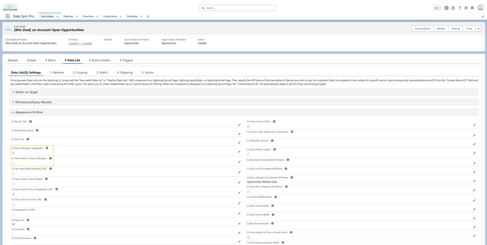

Enable "Q: Query Manager Toggleable?" on the Data List Executable to give users access to the Query Manager (Q)—an intuitive UI that allows them to select fields, adjust filters, and apply sorting as needed.
DSP’s Query Manager lists all selectable and orderable fields, including fields from parent relationships, and provides autocomplete hints for filter operators and values—tailored to the field type (e.g., picklists, date/datetime, reference fields, etc.).

📌 To simplify the interface, enable "Q: Hide Others in Query Manager?" to hide the "Other" section for a more focused user experience.